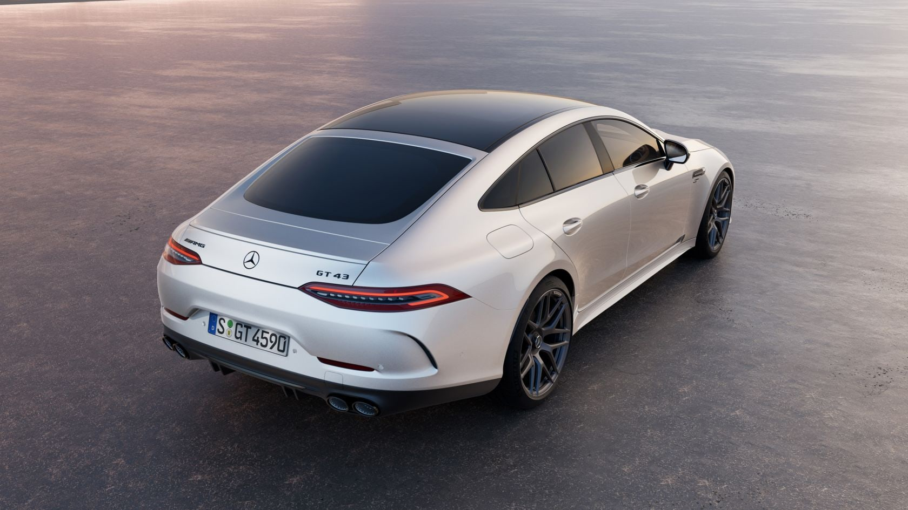
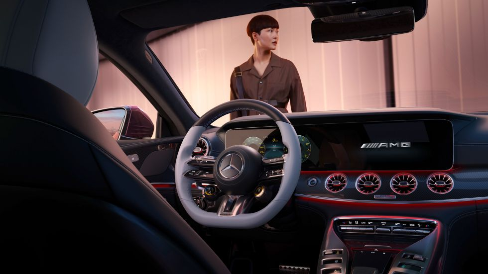

Mercedes-bens AMG GT 4-Door Coupé 2023

نظرة عامة
تجمع +Mercedes-AMG GT 53 4MATIC كوبيه ذات الأبواب الأربعة بين الأداء
المذهل للسيارة الرياضية والجانب العملي للسيارة الأنيقة المخصصة للاستخدام
اليومي. السمات الرياضية لهذه السيارة الكوبيه ذات الأبواب الأربعة يؤكدها
غطاء السيارة المسحوب بعمق للداخل، والجزء الأمامي البارز، والمظهر الخارجي
المتين العضلات. بضغطة واحدة على زر التشغيل ستتأكد من أن +Mercedes-AMG GT
53 4MATIC كوبيه ذات الأبواب الأربعة تنتمي إلى طليعة السيارات التي تتصدر
المقدمة. بفضل محركها المبتكر العالي الكفاءة المكون من 6 أسطوانات مرتبة
في صف واحد الذي ينتج 320 كيلووات (435 قدرة حصانية) [1]، والديناميكية
الهوائية النشطة، وناقل الحركة AMG SPEEDSHIFT TCT ذو 9 سرعات، تنطلق هذه
السيارة لتظل في الطليعة من دون منافس.
المواصفات
سعة المحرك (لتر) 1991
قوة المحرك (حصان) 204
عزم الدوران (نيوتن متر) 300
ناقل الحركة (نيوتن متر) أوتوماتيك
سعة خزان الوقود (لتر) 50
السرعة القصوى (كم/ساعة) 235
الاقتصاد في استهلاك الوقود (لتر/ ١٠٠كم) 5.5
عدد المقاعد 4 مقاعد
نوع الوقود بنزين
السعر5,095,000 EGP
1 / 3

AMG GT 4-Door Coupé
2 / 3

AMG GT 4-Door Coupé
3 / 3

AMG GT 4-Door Coupé
❯
❮